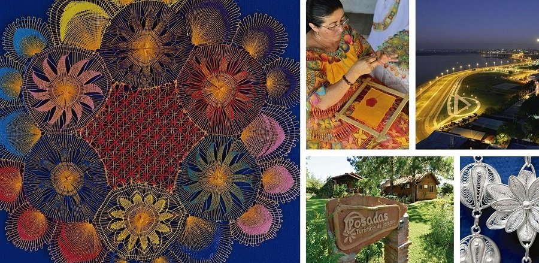

Paisajes y Cultura que te Atraparán


Itagua - Ciudad del Ñanduti

El ñandutí (voz guaraní, generalmente traducida al español como tela de araña) es un encaje de agujas que se teje sobre bastidores en círculos radiales, bordando motivos geométricos o zoomorfos, en hilo blanco o en vivos colores.
La historia del ñandutí es la historia de una aculturación, entre las técnicas artesanales de aguja e hilo provenientes de Europa y la imaginativa destreza de las mujeres mestizas; pues contrariamente a las bellas leyendas que han tejido en torno a este encaje, es de rigor sostener que el mismo no tiene un origen indígena.
Itauguá es una ciudad que pertenece al Departamento Central, está situada a 30 km de la ciudad de Asunción capital del Paraguay. Es reconocida a nivel nacional e internacional por su exquisito y peculiar arte del ñandutí, un tipo de encaje derivado de bordados hispanos tales como el «Sol de Tenerife» (Islas Canarias), introducidos con la colonización en los siglos XVII y XVIII, al cual debe su denominación de «Ciudad del Ñandutí», como también se la conoce. Se encuentra ubicada al Noreste del Departamento, siendo sus límites al norte: el Lago Ypacaraí y Areguá al sur: Itá y Pirayú, al este: Ypacaraí, y al oeste: Capiatá y Julian Augusto Saldívar.
Fue fundada en 1728 por el barón Martín de Barúa, y es en la actualidad una de las ciudades con mayor índice de crecimiento demográfico y expansión urbana del Departamento Central, ubicándose en la 6º posición entre las ciudades más pobladas del departamento y el 14º lugar a nivel país, según las proyecciones estimadas por la DGEEC en el año 2017. También es una de las más extensas a nivel departamental, solamente superada en ese ámbito por Villeta, Nueva Italia, Luque e Itá.

Perfil del Autor
Scrollspy es un pulgin jQuery que hace seguimiento de ciertos elementos y en cual elemento esta centrada actualmente la pantalla del usuario. Nuestro demo principal de esto es nuestra tabla de contenidos en cada pagina de la documentación a lado derecho de la pagina. Al hacer clic en estos enlaces también se desplazará a la página de ese elemento.